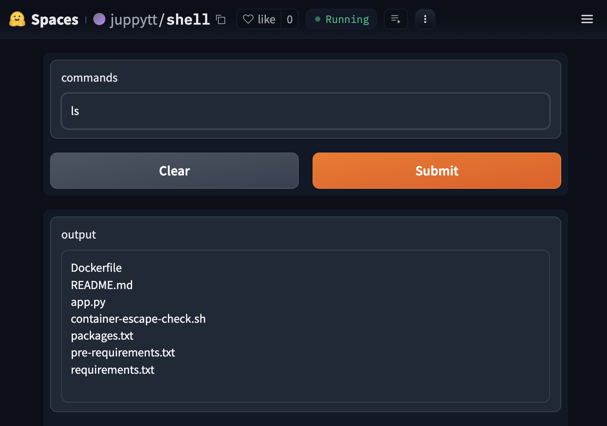
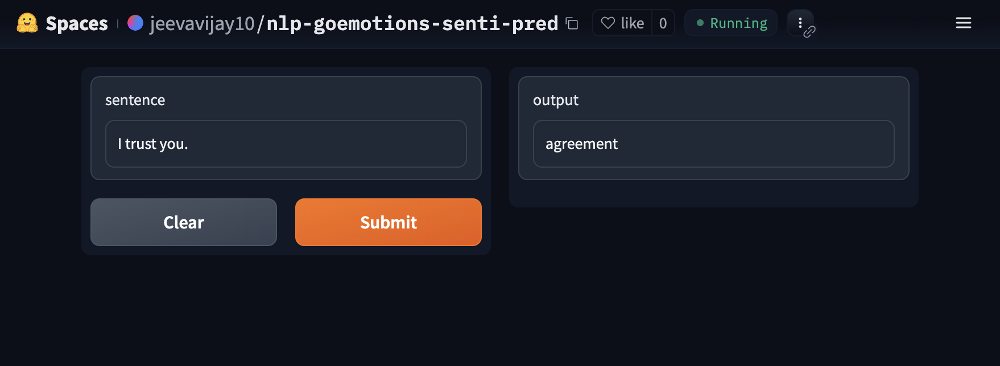
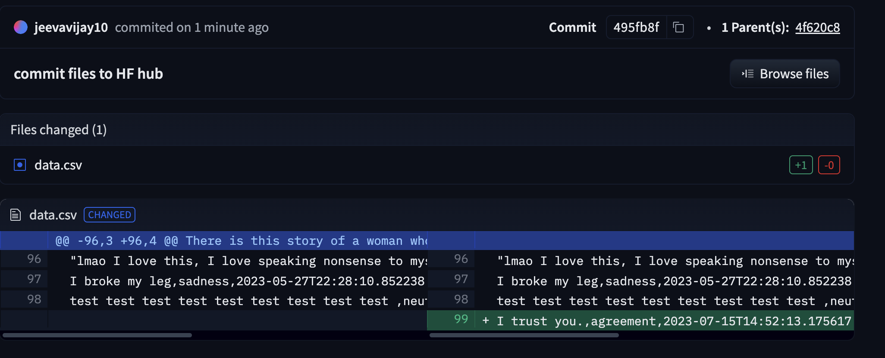
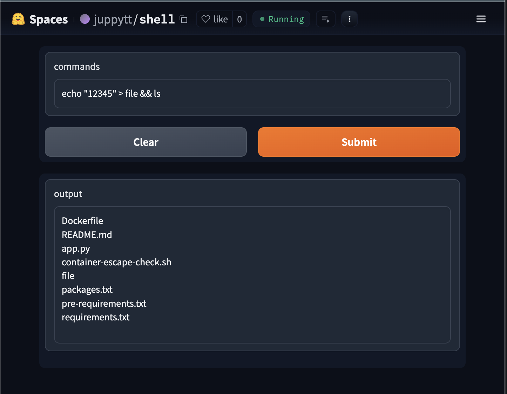
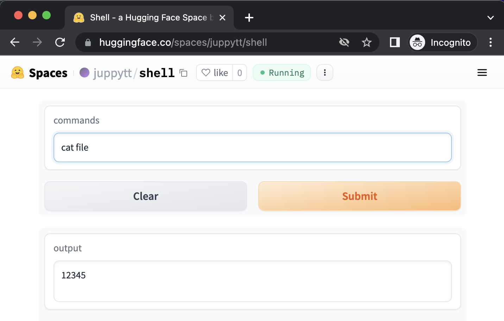
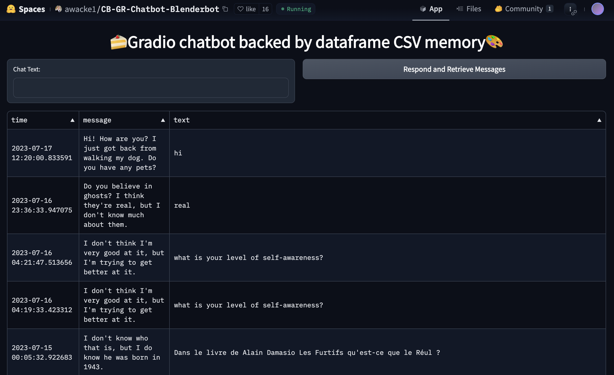

Hugging (Evil) Face: Security issues in Hugging Face
### Introduction In recent years, emerging technology in Machine Learning and Large Language Model (LLM) had led to the development of ML/LLM-powered applications. One of the popular service for ML/LLM application is Hugging Face. In this post, I would like to describe the potential security risks in current Hugging Face, especially in Spaces.
Hugging Face
Hugging Face is a AI community that provides a lot of machine learning models, datasets, and applications. Users can contribute their own models, datasets, and demo applications (i.e., Spaces) to the community. This community has been growing rapidly since the advent of the transformer model.
Specifically, Spaces offers a easy-to-user environment to manage and host demo applications for models. Users can upload and deploy Spaces, which is then served as MLaaS (Machine Learning as a Service) from Hugging Face’s server. Spaces support various interface SDKs (Gradio, Streamlit) and execution environment options with various GPU accelerators.
Security Risks on Spaces
Despite its usability, Spaces incorporates several vulnerable designs, which may potentially lead to security issues.
Vuln. Design 1: Unrestricted App Logics
First, Spaces allow users to upload and distribute any kind of apps. This unrestricted deployment introduces potential unsafe data-flows between the user and the app (or the execution environment). Specifically, arbitrary code execution and information leakage.
Issue 1: Arbitrary Code Execution
By its nature, Spaces allow arbitrary code execution from app developers to Hugging Face server. Developers can run any app on Hugging Face’s server just by uploading the app to Spaces. Moreover, if the app contains data-flows from user input to executable data (e.g., user-provided functions or shell commands), it would allow arbitrary code executions from app users to the server. If the app is publicly available, the arbitrary code execution functionality would be exposed to unspecified and anonymous users.
With proper containerization, the effect of arbitrary code execution is limited to the sandboxed environment. However, if a container escape vulnerability might allow the attacker to attempt container escape attack, which would further enable attacks on the host server.
Arbitrary code execution also allows attackers to change app’s behavior or hijack the goal. One example is bypassing any security measurement (e.g., safeguard prompts, throughput). With arbitrary execution, the attackers can delete or replace the safeguard prompts passed to the model, or they can nullify the restrictions on users such as throughput.
Another example is replacing the model used by the app with different model (e.g., backdoor-injected model, model for different tasks). Considering high-end GPU acceleration environment charge extra costs for the app developer, such attempts might also yield financial loss.
Real-World Example
shell is a simple app that takes user input and passes it to a langchain tool called ShellTool, which runs the input as a shell command. By sending commands, users can explore or manipulate the execution environment. For instance, sending ls as the command input would return the actual file in the containerized environment.

Issue 2: Information Leakage between App and User
Many apps in Spaces operate with numerous user-provided sensitive data. Apps require user credentials (e.g., API keys, ID, password) as a delegate for API uses. Apps require personal information (e.g., name, email, location) to provide customized services. When processing such data, apps should be safely designed to protect personal information. Recent privacy regulations (e.g., GDPR, CCPA) consider any user-provided input passed to web apps as sensitive data and enforces that appsq should not store nor track such data without user content.
Lacking restriction on app internal logics may allow dataflow from the users to untrusted channels. When user data is passed to an app, the app should carefully process the data for the intended operations only. However, as Spaces allow any apps with any logic to be deployed, we cannot assure whether the apps are properly handling user data.
Real-World Example
nlp-goemotions-senti-pred is a demo app for a sentiment prediction model, which allows user to input text and receive sentiment predictions from the model. For instance, if a user inputs “I trust you”, the app will return “agreement” as the predicted sentiment.

However, there is a hidden functionality in this app that logs every user input and updates it to a public Huggingface dataset maintained by the app-developer. Consequently, every text provided by users is leaked and publicly exposed. The app does not inform users about this background activity, leaving them unaware of their data being logged into a dataset.

Vuln. Design 2: Missing Isolation between Requests
Another vulnerable design in Spaces is the lack of sufficient isolation between user requests. Currently, Spaces uses a single container when running an app. Therefore, every request made to the app, regardless of the sender, is executed within the same container environment. This can lead to unsafe data-flows between users, such as information leakage.
Issue 3: Information Leakage between Users
As Spaces provide a single container per app, it is crucial to ensure that user data is not shared between requests. If an app has a data-flow that stores user input to global states and then loads those global states into user-visible outputs, the app becomes vulnerable to user information leakage.
To illustrate this vulnerability, let’s take an example using shell. If a user executes the command echo "12345" > file && ls, the app will create a file named file with 12345 and list the existing files in the current directory.

Then, another user can access the file by sending commands. An arbitrary user can read file by passing cat file to the app, thus leaking the data provided by the previous user.

Real-World Example
Chatbot-Blenderbot is a chat bot app that, upon receiving a user request, runs a model and saves every user input and model response to a file. The entire file, including inputs from other users, is then displayed to the user. However, this app does not notify users that their input will be logged and exposed to other users. Users only become aware that their input is being shared with others after they have already sent their data to the app.

Conclusion
I reported these issues to Hugging Face security team through email and Hugging Face forum. They didn’t replied the email but did show interest in addressing the issues through the forum. Unfortunately, they have not yet provided any working solutions or mitigation measures.
As we are in the initial stage of ML/LLM app development, there are several security vulnerabilities similar to those commonly studied in non-ML programs. One good news is that current ML/LLM apps are mostly for performing simple tasks like text/image transformation or chatbot functionalities, which are less prone to severe security vulnerabilities. Nonetheless, as this field continues to develop rapidly, applications will become complex, and a wide range of security issues are likely to emerge.